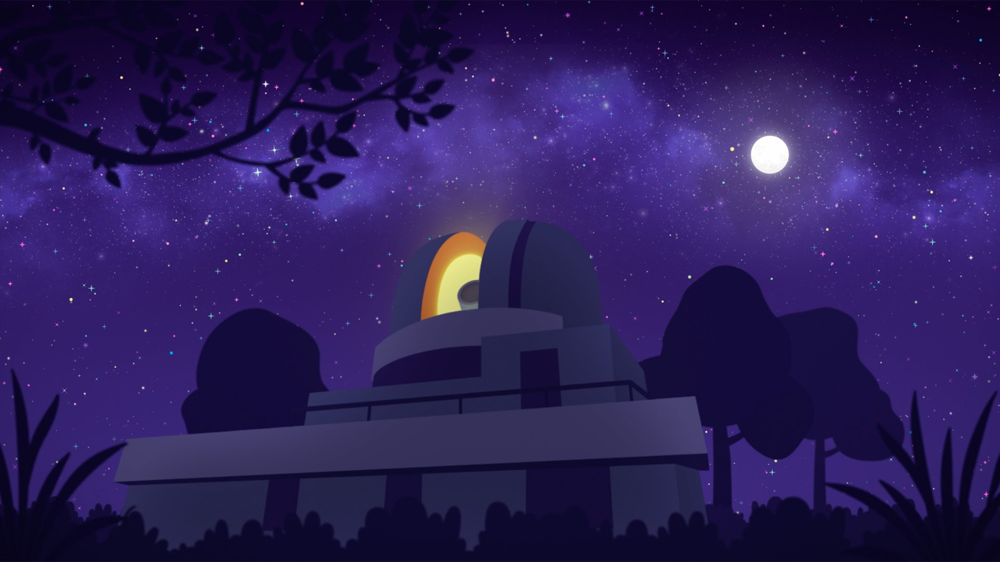
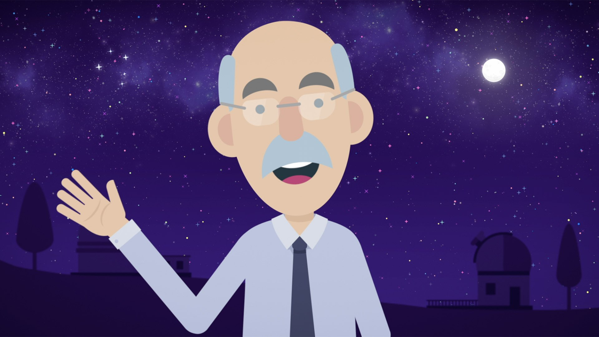
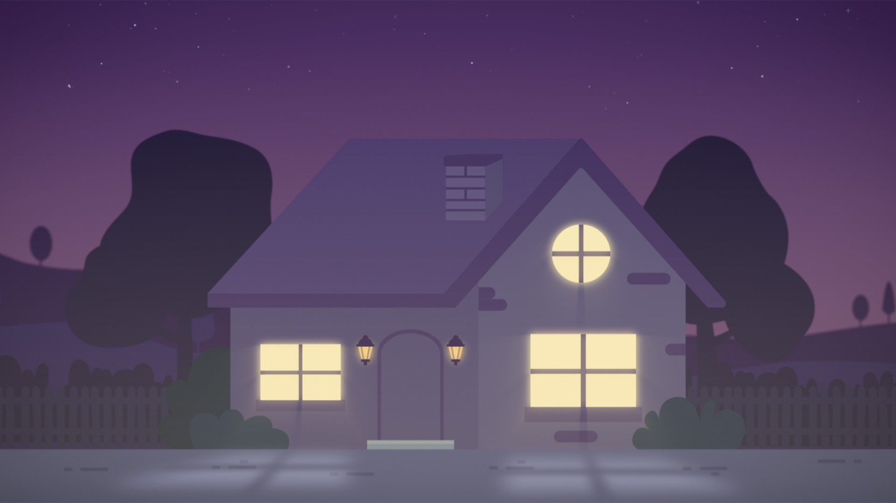
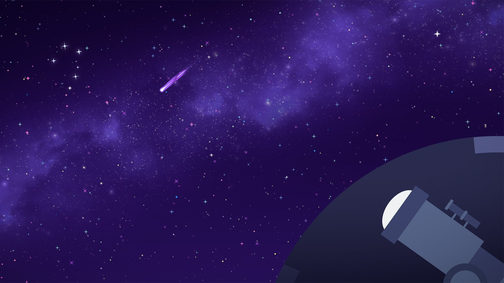
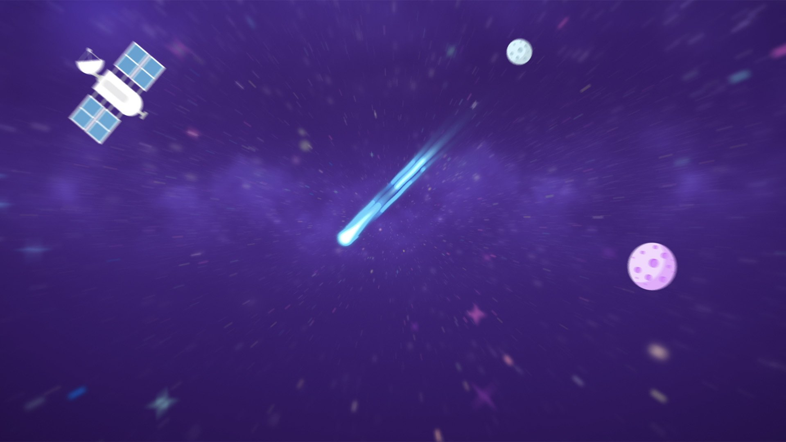

Government · Education
Dark Sky Animation - Engaging Kids in Science & Sustainability
Partnering with the NSW Department of Planning and Environment, I led the creative development of an educational animation designed to engage school-aged children with the importance of protecting our night skies from light pollution.
Working with astronomer, writer and science communicator Fred Watson, we brought his animated alter ego to life in Adobe Character Animator, using in-camera motion capture and real-time lip-syncing to create a relatable, dynamic guide. Storytelling, character design and soundscaping combined into a cohesive, multi-sensory experience - built to hold a young audience's attention while delivering a genuinely complex scientific message clearly.
The animation formed part of the Department's Dark Sky Stage 3 education unit, aligned with broader environmental and sustainability goals: showing how light pollution affects astronomy, wildlife, ecosystems and human health, in a way that supports curriculum outcomes and encourages behaviour change.




